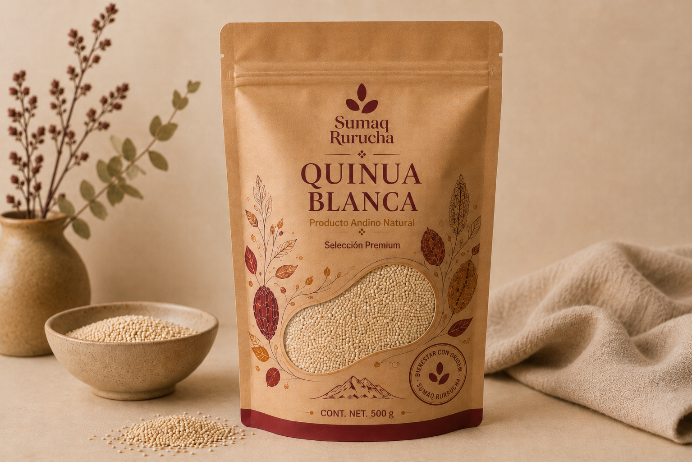
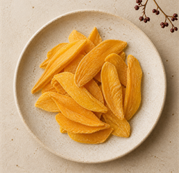
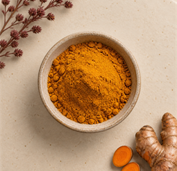
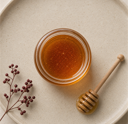
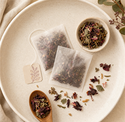
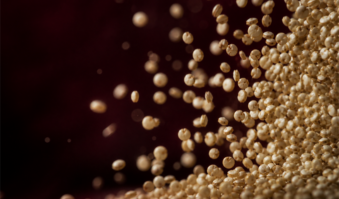
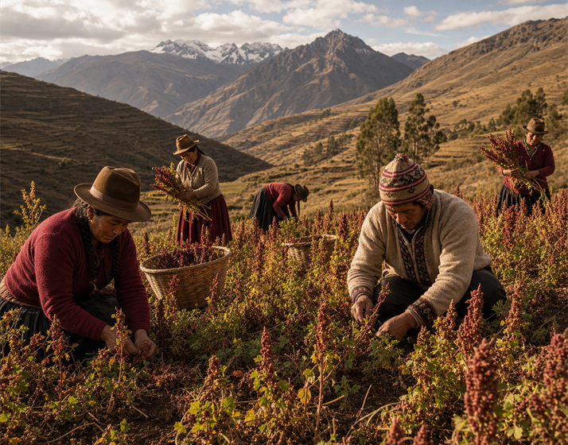
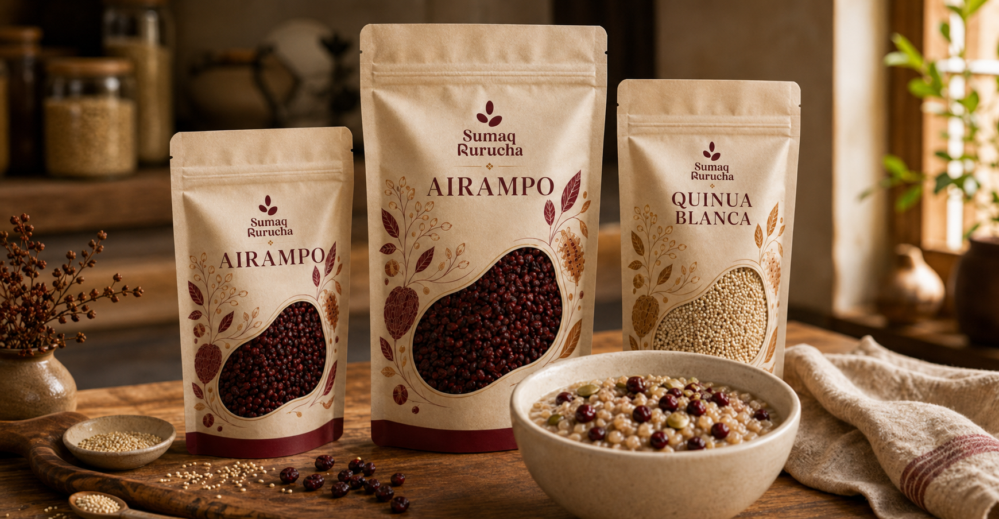

Certificación SENASA
Orgánico verificado
COSECHA ANDINA · PERÚ
Productos naturales seleccionados a mano, con origen claro y sabor verdadero.
MÁS PEDIDOS
Una vitrina visual para los productos que más venden.

Producto destacado
Grano seleccionado, limpio y versátil para ensaladas, bowls y guarniciones.

Pack 250 g
Frasco 120 g
Bolsa 500 g
Digestivo naturalUna imagen fuerte aquí puede vender mejor que una lista de beneficios. Usa textura, movimiento y producto real.

CATEGORÍAS PRINCIPALES
Haz que el usuario compre por imagen antes que por texto.

ORIGEN
Compramos directo a familias productoras del altiplano para que su trabajo llegue entero a tu mesa.
Conocer Sumaq Rurucha4.8 · Promedio sobre 1,240 reseñas verificadas
La quinua llega impecable y se nota que es fresca.
Daniela Quispe · LimaPedí especias y llegaron en menos de dos días.
Marco Salazar · ArequipaMe encanta saber de dónde viene cada producto.
Lucía Ferreyra · CuscoLos frutos secos son enormes y bien crocantes.
Andrés Pinto · TrujilloEMPIEZA POR LOS GRANOS
Quinua, kiwicha y cañihua seleccionadas. Llega en 24-48 h con garantía de frescura.
Ver catálogo de cereales